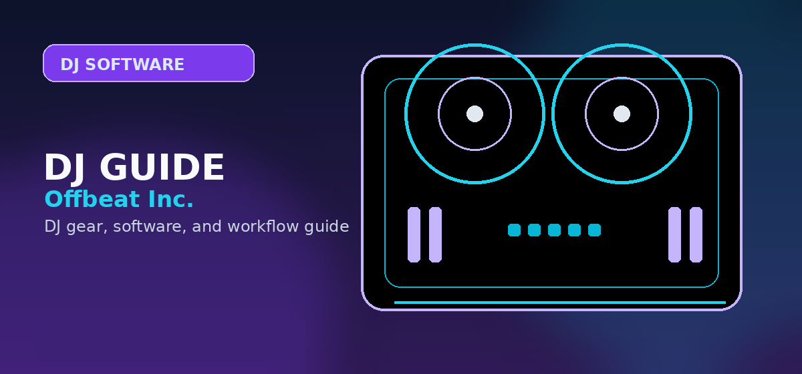

Rekordbox DJ Review 2026: Worth It for Pioneer Users?
Is Rekordbox still the best DJ software for Pioneer users in 2026? Full review of features, CDJ integration, pricing, and how it compares to Serato.

Disclosure: This page uses affiliate links. We may earn a commission at no extra cost to you. Full disclosure →
Rekordbox DJ has long been one of the top choices for DJs seeking a powerful, feature-rich software solution, especially for users of Pioneer DJ equipment. With its latest updates in 2026, does it still stand out in the competitive landscape of DJ software? Here’s our deep dive into Rekordbox DJ, evaluating its features, benefits, drawbacks, and compatibility for Pioneer fans.
What is Rekordbox DJ?
Rekordbox DJ is a professional DJ software developed by Pioneer DJ. It serves as a music management tool and performance platform, streamlining the workflow for DJs around the globe. Its main claim to fame is its seamless compatibility with Pioneer’s extensive hardware lineup, including flagship products such as CDJ players and DJ controllers like the DDJ series.
Key Features of Rekordbox DJ in 2026
Rekordbox DJ has consistently evolved, and 2026 marks the release of several noteworthy upgrades. Let’s examine some of its key features:
Enhanced Performance Mode
The 2026 version features an upgraded performance mode that enables live remixing and customizable effects. DJs can now integrate AI-driven stem separation for real-time audio manipulation.
Cloud Compatibility
Thanks to Pioneer Cloud, Rekordbox DJ allows DJs to store their playlists online and access them effortlessly from multiple devices, an essential feature in an increasingly digital world.
Improved Sound Quality
The latest audio engine ensures pristine sound quality with reduced latency. With audio processing at 64-bit floating point quality, Pioneer boasts near-master level outputs.
Expanded Track Analysis
The 2026 update includes more precise BPM analysis and key detection. These features benefit DJs who need to seamlessly blend tracks without losing harmonic progressions or rhythm.
Advanced Visual Effects
New visual features include dynamic video handling, a library of customizable video overlays, and live mixing tools for visual content.
Compatibility with Pioneer Hardware
One of Rekordbox DJ’s strongest selling points is its deep integration with Pioneer hardware. If you already own Pioneer DJ gear, Rekordbox offers unparalleled compatibility. Here’s a look:
| Feature | Rekordbox Compatibility | Competing DJ Software Compatibility |
|---|---|---|
| CDJ Players | 100% seamless | Partial / Limited |
| DJ Controllers (DDJ) | Excellent support | May need additional configuration |
| Enhanced Lighting Control | Built-in, intuitive | Requires third-party tools |
| Firmware Integration | Optimized across devices | Possible lag/missing functionality |
For Pioneer enthusiasts, Rekordbox undoubtedly enhances the functionality of these devices. The plug-and-play functionality, coupled with hardware-optimized features like lighting control and firmware updates, can shave hours off preparation time.
Drawbacks of Rekordbox DJ for Non-Pioneer Hardware
However, for DJs not using Pioneer equipment, Rekordbox might feel restrictive. Some advanced features are only unlocked when paired with official Pioneer hardware, leaving users with alternative setups at a disadvantage.
What’s New in 2026?
The latest Rekordbox iteration introduces game-changing updates:
AI-Assisted Features
Pioneer has integrated AI-powered stem separation, allowing DJs to isolate vocals, beats, and musical elements for live remixing. This is particularly useful for creating mashups on the fly.
Subscription Pricing Model
Rekordbox has revised its pricing structure to match industry trends. Annual subscription packages now include tiers for casual, professional, and enterprise-level DJs. While this enables cost-effective access, some users may miss the old one-time purchase model.
Expanded Content Creation Tools
The software now offers advanced video mixing tools, a boon for DJs working on visual setups during their performances. It's a nod to how live performances are increasingly blending music with multimedia experiences.
Comparison: Rekordbox DJ Versus Other DJ Software
While Rekordbox excels in compatibility with Pioneer hardware, other DJ software options each bring their own strengths. Here’s how Rekordbox stacks up:
| Feature | Rekordbox DJ | Serato DJ Pro | Traktor Pro 3 |
|---|---|---|---|
| Pioneer Hardware Support | Exceptional | Moderate | Minimal |
| Track Analysis | Precise BPM + Key detection | Good | Advanced |
| Subscription Model | Yes, new tier system | Yes | No |
| Video Mixing Support | Extensive | Limited | Minimal |
| Cost-Effectiveness | Varies by package | Moderate pricing | One-time payment |
Rekordbox Cloud and Remote DJ Features
Rekordbox's cloud sync feature lets you manage your crate from mobile or desktop, analyze tracks offline, and access your library from multiple devices. This is powerful for DJs who travel or manage multiple libraries. Remote DJ capability lets you broadcast mixes without physical hardware at the venue. For festivals and radio streams, this eliminates setup complexity. However, cloud features require a paid subscription tier ($14.99+/month), making it more expensive than perpetual Traktor licenses.
Learning Curve and Community Support
Rekordbox has a steeper learning curve than Serato DJ Lite but excellent documentation from Pioneer. YouTube tutorials are abundant, and the Pioneer DJ Discord community is active. Plan for 20-30 hours to feel truly comfortable. Once you master Rekordbox, you understand the DJ software space deeply because Rekordbox combines most industry-standard features. Learning Rekordbox is an investment that pays dividends across any other DJ software you eventually use.
Final Verdict: Is Rekordbox DJ Worth the Investment?
For Pioneer users, the answer is an unequivocal yes. Whether you’re a professional DJ or someone starting to delve into the field, Rekordbox nearly guarantees a hassle-free, superior experience, leveraging the synergy between the software and its hardware.
For others, it depends on your setup and needs. Competing software like Serato DJ Pro or Traktor Pro 3 may outperform Rekordbox in certain areas, especially in standalone expert use cases. However, the advanced 2026 features and enhanced performance make it a strong contender.
At the end of the day, Rekordbox DJ represents a pinnacle in DJ software for any Pioneer aficionado in 2026.
Rekordbox DJ Review: Is It Worth It for Pioneer Users in 2026?
Rekordbox has evolved from a library manager to a full DJ performance platform, and Pioneer DJ users often ask whether it remains the best choice in 2026. This review examines features, hardware integration, pricing, performance, and unique advantages for Pioneer owners. We'll compare Rekordbox to Serato and Traktor, list pros and cons, and include clear recommendations so you can decide fast.
What’s New in Rekordbox 2026?
Rekordbox 2026 brings tighter hardware firmware synchronization, improved streaming performance, better latency handling for CDJ and XDJ link setups, and expanded AI-assisted track analysis. The interface received incremental refinements: customizable performance pads, clearer waveform coloring, and a refreshed preferences panel that simplifies HID mapping for legacy Pioneer gear.
Integration with Pioneer Hardware
Rekordbox remains the native software for Pioneer CDJs and XDJs, offering plug-and-play compatibility that third-party apps can’t match. Key mapping, jog display metadata, and rekordbox USB export still provide the smoothest workflow for USB-to-CDJ gigs. If you own CDJ-3000s, XDJ-1000s, or any link-compatible mixer, Rekordbox’s proprietary features like Hot Cues display and beat sync across players are compelling reasons to stay inside the Pioneer ecosystem.
Performance and Stability
In live tests, Rekordbox 2026 demonstrates reliable performance under load. Library scanning is faster thanks to background processing, and real-time pitch and beatgrid adjustments are responsive. Less experienced users will appreciate Auto Grid improvements; pros can still access manual corrections. Crash reports are lower in recent updates, though extreme multi-deck setups may still benefit from a beefy CPU and SSD storage.
Rekordbox vs Competitors
| Feature | Rekordbox 2026 | Serato DJ Pro | Native Instruments Traktor |
|---|---|---|---|
| Pioneer hardware support | Native, best | Limited | Unsupported |
| Performance pads & FX | Advanced | Strong | Flexible |
| Streaming services | Multiple | Multiple | Limited |
| Latency (CDJ/XDJ link) | Lowest | Higher | Higher |
| Library management | Robust | Very good | Good |
Pros and Cons for Pioneer Users
✅ Pros
- Native integration with Pioneer CDJ/XDJ displays and metadata.
- Stable USB export for conventional club workflows.
- Strong sync and link reliability across Pioneer hardware.
- Cleaner firmware/software collaboration reduces compatibility headaches.
❌ Cons
- Subscription tiers can be confusing for casual users.
- Some features locked behind paid plans.
- Less third-party controller flexibility compared to Serato.
Pricing and Plans (2026)
Rekordbox continues a hybrid model with a free tier for basic library management and performance features, plus paid plans for advanced FX packs, DVS support, and streaming access. Pioneer often bundles limited-time trials with controllers. For Pioneer users who prioritize CDJ/USB setups, the paid plan that includes DVS and expanded export may provide the best value.
Who Should Buy Rekordbox in 2026?
If you primarily play on Pioneer hardware — especially CDJs and XDJs in clubs — Rekordbox remains the most logical choice. Club residencies, festival DJs using industry-standard players, and users who rely on USB stick workflows will benefit most. If you prefer diverse controller ecosystems or plug-in-heavy software, evaluate Serato or standalone MIDI workflows.
Where to Get Started
Ready to try rekordbox? The free Core plan covers library management and USB export — no payment required. For DVS and cloud sync, the Performance plan is available monthly or annually.
Search Pioneer DDJ-FLX4 rekordbox controller on Amazon →
Final Verdict
Rekordbox in 2026 is a mature, focused platform that continues to be the best match for Pioneer hardware owners. It balances performance, hardware integration, and improved analysis tools to deliver a stable live experience. While the subscription model and occasional feature gating are drawbacks, the native display support and USB/export reliability make Rekordbox worth it for most Pioneer users.
If you want the fastest workflow with CDJs, Rekordbox is still the practical choice; if you prioritize controller diversity or open plugin ecosystems, test alternatives before fully committing.
Practical Tips and Best Practices
To get the most from Rekordbox, keep firmware and software up to date, use an SSD for your music library, and pre-analyze tracks before gigs to avoid unexpected beatgrid issues. Build playlists with standard naming conventions, set memory cues on frequently used tracks, and export both USB and backup libraries. When practicing, enable loop roll and practice hot cue transitions to reduce mistakes under pressure. If you use DVS, calibrate your turntables before each set and use shielded cables to avoid interference.
Frequently Asked Questions
Is rekordbox still the best choice for Pioneer DJ controllers?
Yes, rekordbox remains the most natural choice if you use Pioneer DJ or AlphaTheta controllers, CDJs, or XDJ players. It is less compelling if you want the broadest third-party controller ecosystem.
Can I use rekordbox for free?
rekordbox has a free tier for library management and basic performance workflows, but advanced features such as cloud options, DVS, or expanded professional tools may require a paid plan or compatible hardware unlock.
Is rekordbox better than Serato for beginners?
rekordbox is usually better for beginners who expect to move toward Pioneer club gear. Serato can be a better fit for scratch DJs, open-format controller users, or people who already own Serato-focused hardware.
What hardware should I pair with rekordbox first?
The DDJ-FLX4 is the safest beginner pick. More advanced users should compare the FLX10, XDJ-style standalone systems, or CDJ-based workflows before spending more.
rekordbox Plans Compared (2026)
| Plan | Price | Key Features | Best For |
|---|---|---|---|
| Core (free) | $0 | Basic DJ performance, library management, USB export | Beginners, hobbyists |
| Performance | ~$11/mo | Full DJ performance, DVS, effects | Active DJs, club performers |
| Creative | ~$16/mo | Cloud library sync, advanced editing, video DJing | Mobile DJs, creative performers |
| Professional | ~$22/mo | Cloud backup, team collaboration, unlimited storage | Pro DJs, agencies, teams |